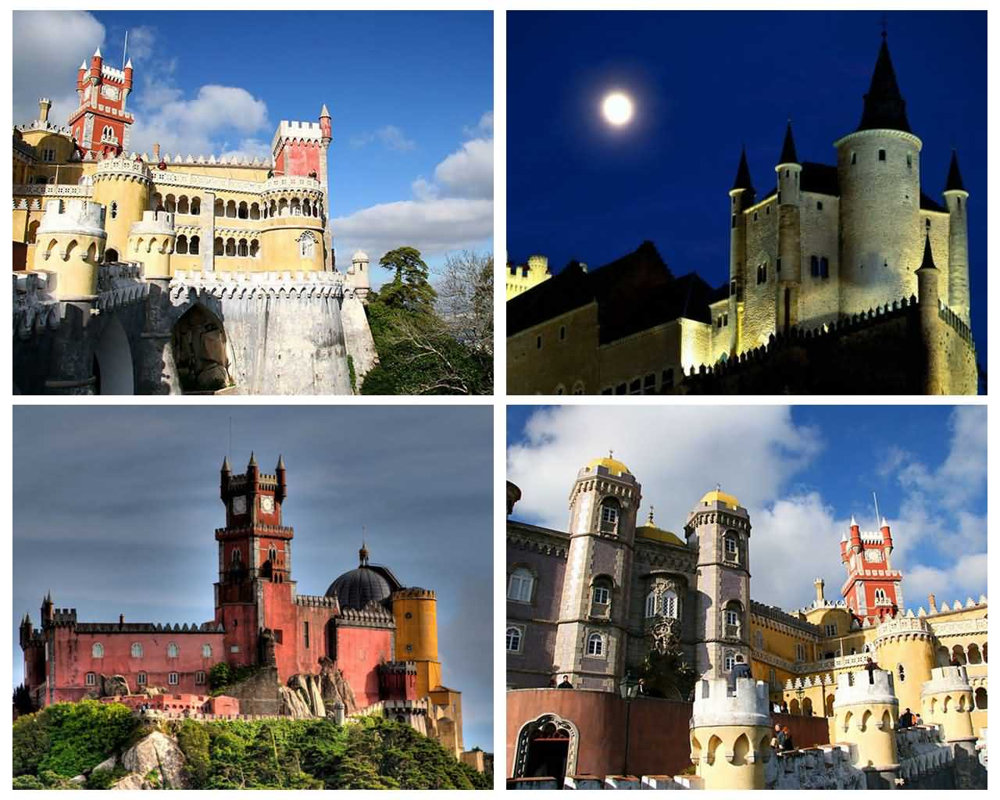

罗马尼亚布朗城堡(Bran Castle)
布朗城堡又称为德古拉堡 这座城堡更为人们熟知的名称是德古拉城堡(Dracula Castle)，那是因为19世纪末爱尔兰作家斯托克(Bram Stoker)撰写了一部非常著名的小说《德古拉》，故事就以这座城堡为背景， 而主人公正是吸血鬼德古拉伯爵。这部小说多次被搬上荧幕，其中以《惊情四百年》较为忠于原著。正是因为这个故事深入人心，于是人们已经把这座城堡定义为吸血鬼城堡。
西班牙塞哥维亚城堡(Segovia Castle)

塞哥维亚城堡，位于塞哥维亚城西端，城堡所处的位置正好是当时西班牙北部城市卡斯提尔(Castile)的要冲上，临崖而建的塞哥维亚城堡(Alcazar de Segovia)，因战略考虑，拥有绝佳的视野，入口还有10多公尺深的护城河， 以防范敌人攻入城中。这座城堡始建于12 世纪，但15世纪初才有比较积极的建筑动作，完工时间约在1455年，不过，这里曾在1862年发生火灾，因此目前所见大部分为19世纪的重建结果。由于古堡的独特地理位置所以在西班牙不同的历史时期， 城堡总是各种势力争相抢夺的对象。
法国枫丹白露宫(Palace of Fontainebleau)
枫丹白露宫及其花园，位于塞纳河左岸的枫丹白露镇，距巴黎约60公里。枫丹白露宫坐落在170平方公里的森林中，这里风景优美，气候宜人。1981年联合国教科文组织将枫丹白露宫及其花园作为文化遗产，列入世界遗产名录。 枫丹白露意为“美泉”，当地泉水清冽，12世纪路易七世在泉边修建了城堡，供打猎休息使用，这就是后来的枫丹白露宫。枫丹白露宫建筑群由古堡、宫殿、院落和园林组成，其中常年开放的馆舍有三间文艺复兴大厅， 皇帝寝宫及拿破仑博物馆。从建筑艺术上看，枫丹白露可以说是法国古典建筑的杰作之一，各个时期的建筑风格都在这里留下了痕迹。
法国卡尔卡松城堡(Cité de Carcassonne)
卡尔卡松城堡位于法国南部重要工业城市图卢兹到地中海沿岸的途中，虽然它地处偏僻，远离尘世，但城堡外却总是车水马龙，游人络绎不绝，特别是吸引了众多的女士。卡尔卡松城堡不仅历史悠久，而且在古城堡的历史上，流传着不少有关妇女的故事。 从外形看，这是一座典型的中世纪欧洲城堡，屋身呈圆柱形，屋顶呈圆锥形的塔楼，特别引人注目。
葡萄牙佩纳城堡(Palacio da Pena)

佩纳宫(Palacio da Pena)是国王离宫，它耀眼、奇特、矫饰的身姿看上去像一座乐园式的城堡。宫殿本身为多种建筑风格的大杂烩，兼具哥德式、文艺复兴式、摩尔式、曼努埃尔 式(Manueline，葡王努埃尔一世在位时的建筑风格) 乃十九世纪葡萄牙女王玛丽雅二世的丈夫——费迪南德(Ferdinand of Saxe-Coburg-Gotha)之心血结晶。费迪南德受德国浪漫主义的启发，授命德国建筑师冯埃施韦格南爵(Baron von Eschwege)负责兴筑，主要建于1840－－1850年，最终完工于1885年，即费迪南德逝世那年。 居住在此地区的其他达官显贵，按照同样的理念建筑官邸，使得辛特拉成为欧洲浪漫派建筑的中心，其公园与庭园风格更深深影响及后世的景观美化设计。由于深具文化价值，此一地区于1995年获联合国教科文组织列为世界遗产。